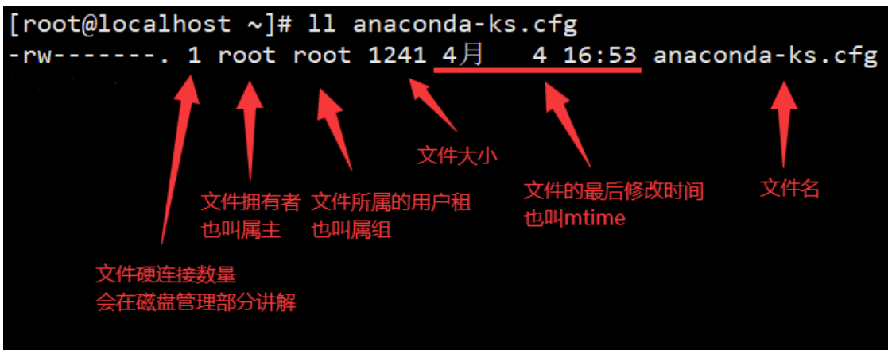
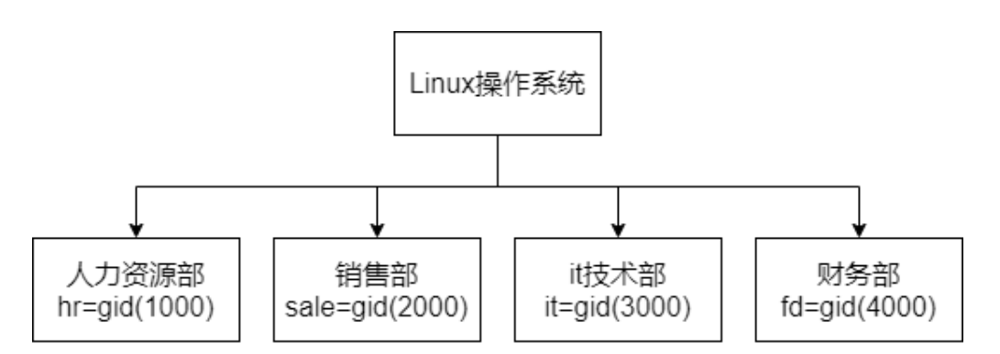
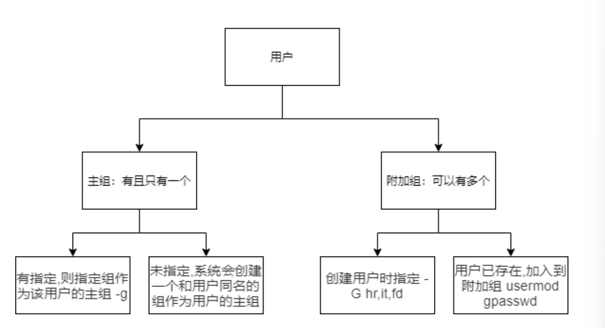

Linux用户权限管理
Linux系统是一个多用户多任务的分时操作系统，任何一个要使用系统资源的用户，都必须首先向系统管 理员申请一个账号，然后以这个账号的身份进入系统。
为了更加方便的管理多个用户，就出现了用户组的概念，关于用户和用户组：
系统上的每个进程(运行的程序)都是作为特定用户运行
每个文件是由一个特定的用户拥有
访问文件和目录受到用户的限制
与正在运行的进程相关联的用户确定该进程可访问的文件和目录
实现用户账号的管理，要完成的工作主要有如下几个方面：
用户账号的添加、删除与修改
用户账号的添加、删除与修改
用户账号的添加、删除与修改
用户和用户组查看
id
xxxxxxxxxx static { System.out.println(“我是静态代码块中的内容”);}//这个会随着类的加载而加载，即在整个程序的最开始的时候进行执行。而且只加载一次就可以，不管其出现在什么地方java
id会显示用户以及所属群组的实际与有效ID。若两个ID相同，则仅显示实际ID。若仅指定用户名称，则 显示目前用户的ID。
1 | |
-g：显示用户所属群组的ID。
-G：显示用户所属附加群组的ID。
-n：显示用户，所属群组或附加群组的名称。
-n：显示用户，所属群组或附加群组的名称。
-u：显示用户ID。
uid的约定
Linux操作系统会依据用户的uid数值来判定这个用户的角色，分别如下
0：超级管理员，也就是root，在linux系统中拥有所有权力
1~999：系统用户，系统用户往往是用来约束系统中的服务的
1000+：普通用户，可以用来登陆和使用Linux操作系统
关于root用户
uid是0
拥有操作系统所有权力
该用户有权力覆盖文件系统上的普通权限
安装或删除软件并管理系统文件和目录
大多数设备只能由root控制
实例
查看当前登陆的用户信息
1 | |
查看文件的拥有者
1 | |

查看运行进程的用户名，ps命令会在后面进程管理部分讲解
1 | |
相关的文件
之前说过Linux一切皆文件，所以用户和用户组相关的信息也都是保存在文本文件中的，下面列举出相关 的文件。
passwd文件
用于保存用户的信息，一般第一行是root用户，下面都是其他用户
1 | |
shadow文件
格式中密码占位置太长了，所以使用x来替代，Linux系统会到shadow中查找x部分的的密码内容
1 | |
格式不需要大家记住，只需要知道关于这个用户的密码和有效期都在这个文件中即可。 密码在 passwd 文件中会使用加密算法加密，所以别想知道我的密码是什么，加密算法默认是 $6 ，这个 类型6的加密算法是sha-512。我们也可以在man手册中看到对shadow文件的详细解释。
1 | |
group文件
用户和组的对应关系，会保存在group文件中
1 | |
group文件
用户和组的对应关系，会保存在group文件中
1 | |
用户组管理
添加用户组：groupadd
groupadd 命令用于创建一个新的工作组，新工作组的信息将被添加到系统文件中
1 | |
选项
-g：指定新建工作组的 id；
-r：创建系统工作组，系统工作组的组ID小于 500；
-K：覆盖配置文件 /etc/login.defs
-o：允许添加组 ID 号不唯一的工作组。
-f：如果指定的组已经存在，此选项将失明了仅以成功状态退出。当与 -g 一起使用，并且指定的 GID_MIN已经存在时，选择另一个唯一的GID（即-g关闭）。
实例
按照下图创建组，并且指定gid，并且检查是否成功

1 | |
修改用户组：groupmod
groupmod命令用于更改群组识别码或名称
1 | |
选项
-g：将组 ID 改为 GID
-n：改名为 NEW_GROUP
-o：允许使用重复的 GID
实例
修改fd组的名字为finance
1 | |
删除用户组：groupdel
groupdel命令用于删除群组
需要从系统上删除群组时，可用groupdel(group delete)指令来完成这项工作。倘若该群组中仍包括某 些用户，则必须先删除这些用户后，方能删除群组。
1 | |
实例
删除一个用户组
1 | |
用户组成员管理：gpasswd
gpasswd 是 Linux 下工作组文件 /etc/group 和 /etc/gshadow 管理工具，用于将一个用户添加到组或 者从组中删除
1 | |
选项
-a：添加用户到组；
-d：从组删除用户；
-A：指定管理员；
-M：指定组成员和-A的用途差不多；
-R：限制用户登入组，只有组中的成员才可以用newgrp加入该组。
实例
创建用户itadmin，并且将其加入it组
1 | |
用户管理
添加用户：useradd
useradd可以用来添加新的用户账号
1 | |
选项
-c **comment：**指定一段注释性描述。
-d **目录：**指定用户主目录，如果此目录不存在，则同时使用-m选项，可以创建主目录。
-m：创建用户的主目录
-g **用户组：**指定用户所属的用户组，默认会创建一个和用户名同名的用户组。
-G **用户组：**用户组 指定用户所属的附加组，一个用户可以属于多个附加组。
-s **Shell文件：**指定用户的登录Shell。
**-u 用户号：**指定用户的用户号，如果同时有-o选项，则可以重复使用其他用户的标识号。
实例
添加一般用户
1 | |
为添加的用户指定相应的用户组
1 | |
为新添加的用户指定home目录
1 | |
建立一个不给登录的用户
1 | |
修改用户：usermod
usermod命令用于修改用户帐号
usermod可用来修改用户帐号的各项设定
1 | |
选项
**-c<备注>：**修改用户帐号的备注文字。
**-a：**追加：默认的修改是覆盖
**-d登入目录>：**修改用户登入时的目录。
**-e<有效期限>：**修改帐号的有效期限。
**-f<缓冲天数>：**修改在密码过期后多少天即关闭该帐号。
**-g<群组>：**修改用户所属的群组。
**-G<群组>：**修改用户所属的附加群组。
**-l<帐号名称>：**修改用户帐号名称。
**L：**锁定用户密码，使密码无效。
**-s：**修改用户登入后所使用的shell。
**-u：**修改用户ID。
**-U：**解除密码锁定。
实例
更改登录的目录
1 | |
改变用户的uid
1 | |
删除用户：userdel
userdel命令用于删除用户帐号
userdel可删除用户帐号与相关的文件。若不加参数，则仅删除用户帐号，而不删除相关文件
1 | |
选项
-r：删除用户登入目录以及目录中所有文件
实例
删除用户账号
1 | |
passwd文件中的shell
查看 /etc/passwd 文件会发现在每行的最后是登录成功之后执行的命令，有两种是使用最为频繁的：
/bin/bash：这个是Linux的命令行工具，我们正常登陆之后默认就是进入命令行
/sbin/nologin：如果写成nologin，那么用户将无法登录，有些用户是作为进程权限管理而存在 的，不需要登录。如果提供登录的功能反而不安全，所以写成nologin
1 | |
我们可以新建一个用户，然后尝试自定义登录成功之后执行的命令，用来加深印象。
1 | |
切换到test01用户，会发现自动进入vi的界面，说明最后的这个段内容就是用户登录之后会运行的程序

用户密码管理
root用户可以直接设置普通用户密码，普通用户必须要提供原密码，才可以修改自己密码。
passwd
passwd命令用来更改使用者的密码
1 | |
选项
-k：保持身份验证令牌不过期
-d：删除已命名帐号的密码(只有根用户才能进行此操作)
-l：锁定指名帐户的密码(仅限 root 用户)
-u：解锁指名账户的密码(仅限 root 用户)
-x：密码的最长有效时限(只有根用户才能进行此操作)
-n：密码的最短有效时限(只有根用户才能进行此操作)
-w：在密码过期前多少天开始提醒用户(只有根用户才能进行此操作)
-i：当密码过期后经过多少天该帐号会被禁用(只有根用户才能进行此操作)
-S：报告已命名帐号的密码状态(只有根用户才能进行此操作)
–stdin：从标准输入读取令牌(只有根用户才能进行此操作)
实例
修改test01用户密码
1 | |
使用管道符设置用户密码
1 | |
login.defs文件
/etc/login.defs 文件是用来创建用户时进行一定的限制，但是优先级低于 /etc/passwd 和 /etc/shadow ,如果有冲突的地方,系统会以 /etc/passwd 和 /etc/shadow 为准
下面是这个文件的内容，egrep命令我们后续会讲到，这边可以理解为不看文件的注释和空行。
1 | |
chage
chage是用于更改用户密码过期信息
1 | |
选项
-d：将最近一次密码设置时间设为“最近日期”
-E 过期日期：将帐户过期时间设为“过期日期”
-I INACITVE：过期 INACTIVE 天数后，设定密码为失效状态
-l：显示帐户年龄信息
-l：显示帐户年龄信息
-M 最大天数：将两次改变密码之间相距的最大天数设为“最大天数”
-W 警告天数：将过期警告天数设为“警告天数”
实例
强制用户在下次登录的时候换密码
1 | |
**小知识：**当你新建用户的时候，用户的home目录下会有一些默认的隐藏文件，这些隐藏文件是在创建 用户的时候从 /etc/skel/ 中复制过去的。
1 | |
sudoers
Linux是多用户多任务的操作系统, 共享该系统的用户往往不只一个。出于安全性考虑, 有必要通过 useradd创建一些非root用户, 只让它们拥有不完全的权限; 如有必要，再来提升权限执行。
sudo就是来解决这个需求的: 这些非root用户不需要知道root的密码，就可以提权到root，执行一些 root才能执行的命令。
1 | |
sudo命令执行过程
当用户执行sudo时，系统会主动寻找 /etc/sudoers 文件，判断该用户是否有执行sudo的权限
确认用户具有可执行sudo的权限后，让用户输入用户自己的密码确认
确认用户具有可执行sudo的权限后，让用户输入用户自己的密码确认
赋予用户sudo操作的权限
通过useradd添加的用户，并不具备sudo权限。在ubuntu/centos等系统下, 需要将用户加入admin组或 者wheel组或者sudo组。以root用户身份执行如下命令, 将用户加入wheel/admin/sudo组。
1 | |
如果提示wheel组不存在, 则还需要先创建该组
1 | |
配置文件
sudo的权限控制可以在 /etc/sudoers 文件中查看到。一般来说，通过cat /etc/sudoers指令来查看该 文件, 会看到如下几行代码。
1 | |
对/etc/sudoers文件进行编辑的代码公式可以概括为
1 | |
凡是[ ]中的内容, 都能省略; 命令和命令之间用 , 号分隔，字段3、字段4，是可以省略的。
“字段1"不以%号开头的表示"将要授权的用户”，以%号开头的表示"将要授权的组"。
"字段2"表示允许登录的主机, ALL表示所有，;如果该字段不为ALL,表示授权用户只能在某些机器上 登录本服务器来执行sudo命令
"字段2"表示允许登录的主机, ALL表示所有，;如果该字段不为ALL,表示授权用户只能在某些机器上 登录本服务器来执行sudo命令
"字段3"如果省略, 相当于(root:root)，表示可以通过sudo提权到root，如果为(ALL)或者(ALL:ALL), 表示能够提权到(任意用户:任意用户组)。
"字段4"的可能取值是NOPASSWD:。请注意NOPASSWD后面带有冒号:。表示执行sudo时可以不需 要输入密码。
比如: lucy ALL=(ALL) NOPASSWD: /bin/useradd 表示: 普通用户lucy可以在任何主机上, 通 过sudo执行/bin/useradd命令, 并且不需要输入密码
比如: peter ALL=(ALL) NOPASSWD: ALL ,表示: 普通用户peter可以在任何主机上, 通过sudo 执行任何命令, 并且不需要输入密码。
"字段5"是使用逗号分开一系列命令,这些命令就是授权给用户的操作; ALL表示允许所有操作。命令 都是使用绝对路径, 这是为了避免目录下有同名命令被执行，从而造成安全隐患。
如果你将授权写成如下安全性欠妥的格式: lucy ALL=(ALL) chown,chmod,useradd 那么用 户就有可能创建一个他自己的程序, 也命名为userad, 然后放在它的本地路径中, 如此一来他就 能够使用root来执行这个"名为useradd的程序"。这是相当危险的!
编辑配置文件
在实践中,去编辑 /etc/sudoers 文件，系统提示我没权限，这是因为 /etc/sudoers 的内容如此敏感， 以至于该文件是只读的。所以，编辑该文件前，请确认清楚你知道自己正在做什么。
强烈建议通过 visudo 命令来修改该文件，通过 visudo 修改，如果配置出错，会有提示。
官方文档推荐的做法，不是直接修改 /etc/sudoers 文件，而是将修改写在 /etc/sudoers.d/ 目录下的 文件中。如果使用这种方式修改sudoers，需要在 /etc/sudoers 文件的最后行，加上 #includedir /etc/sudoers.d 一行(默认已有)。需要注意，这个 #includedir /etc/sudoers.d 中的 # 并不是注 释，请勿修改。
选项
**-u：**以指定用户或 ID 运行命令(或编辑文件)
**-l：**显示出自己（执行 sudo 的使用者）的权限
**-b：**将要执行的指令放在后台执行
-i： 以目标用户身份运行一个登录 shell；可同时指定一条命令。相当于切换到root，不过只需要用 户自己的密码即可。
实例
以管理员身份查看shadow文件
1 | |
查看下列示例
1 | |
1 | |
查看下列示例
1 | |
1 | |
默认情况下输入一次sudo可以保持15分钟不再要求输入密码，如果想要延长这个时间，可以修改 配置文件
1 | |